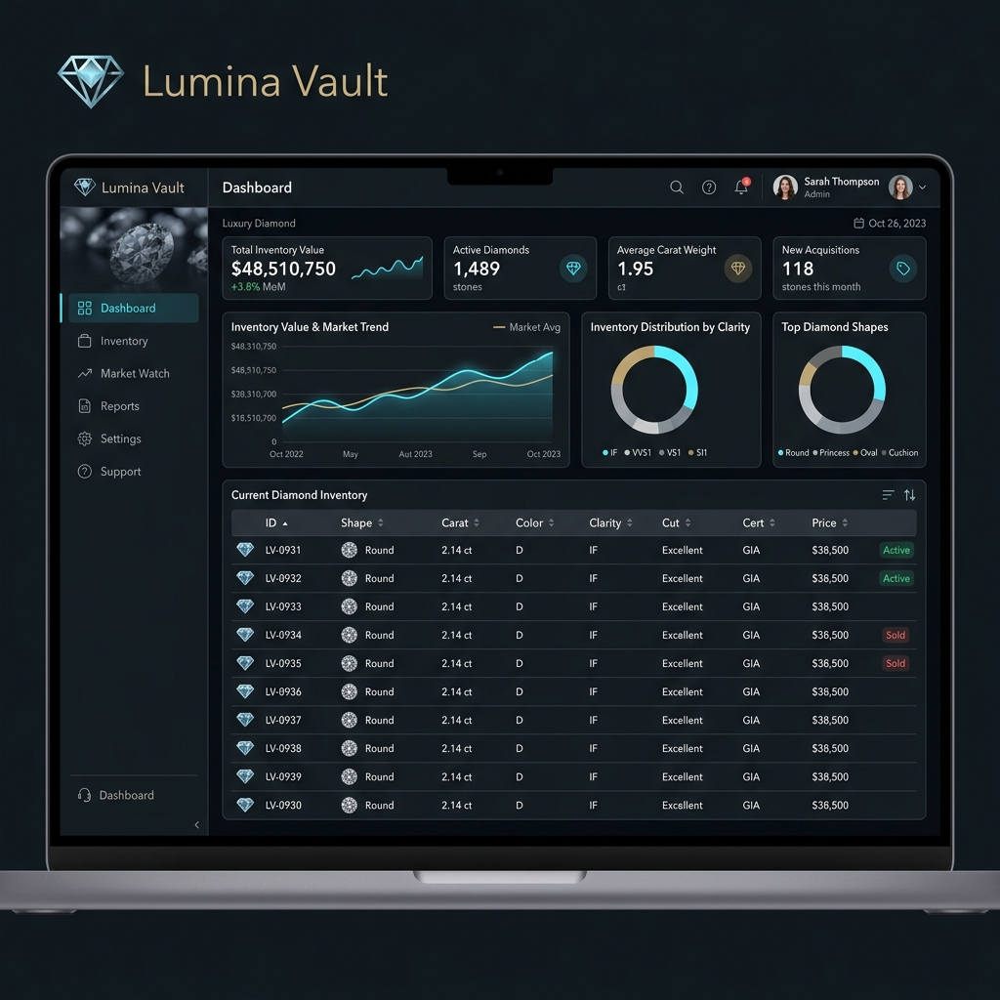
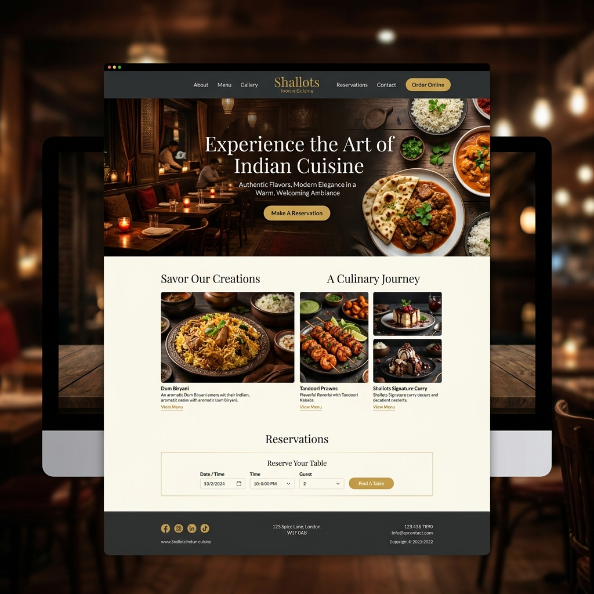
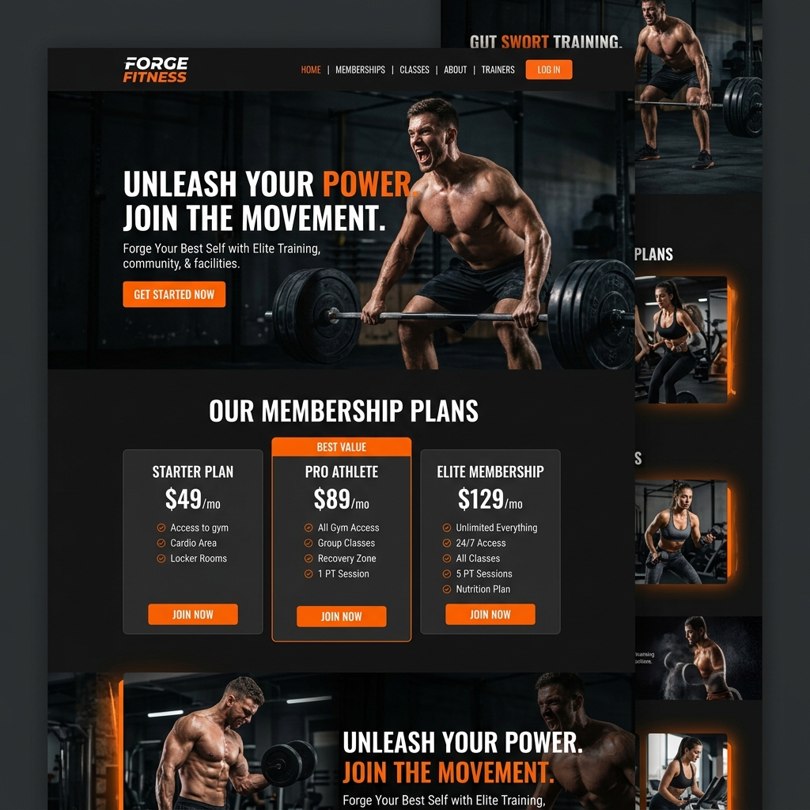

UI/UX Design
A display of digital products, client dashboards, and responsive platforms designed to bring clarity to complex user flows.

StarGems Inc.
Designed the Lumina Vault dashboard system, streamlining diamond inventory controls and market watch tracking.

Shallots Restaurant
Built a premium web experience for Austin's Indian cuisine restaurant, featuring immersive culinary photography and digital reservation booking.
VISIT WEBSITE ↗
Austin, TX

Gym Landing Page
Developed a high-energy conversion landing page design with strong typography layouts and responsive membership tables.
check out my case studies for deep details!
↓